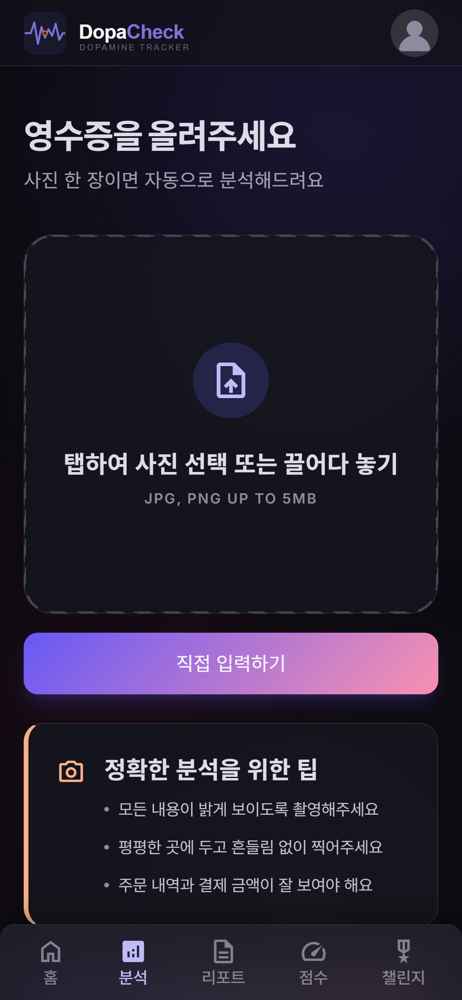
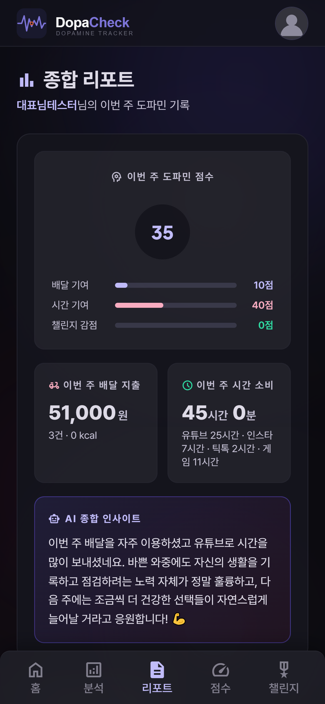
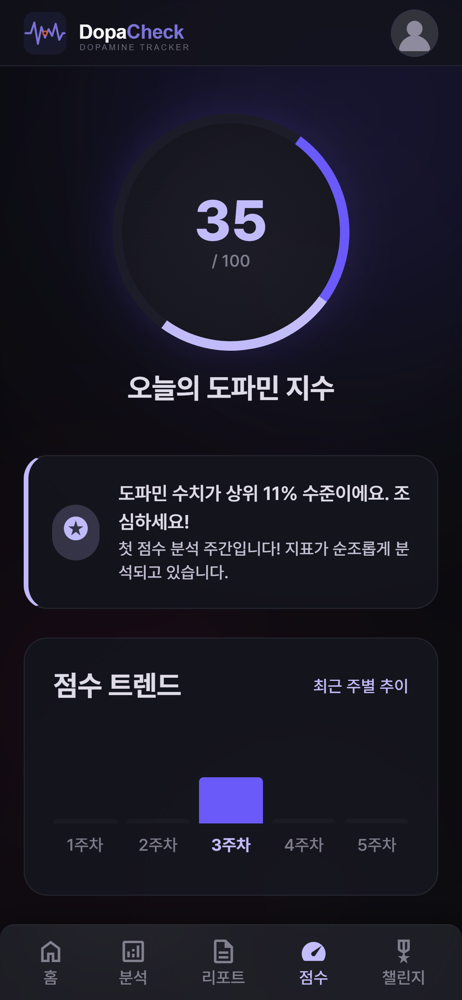

01
무엇을 풀려고 했나
20·30대는 배달·SNS·게임에 매일 돈과 시간을 소비하지만, 그 합계를 체감하기 어렵습니다. 가계부·스크린타임 앱은 직접 기록해야 하고 죄책감만 줘서 금세 포기하게 됩니다. DopaCheck은 영수증 사진 한 장·시간 입력만으로 AI가 자동 분석하고, 죄책감 대신 공감 코멘트와 챌린지로 자각·개선을 유도하는 걸 목표로 했습니다.
AI 심화 과정 6인 팀이 7일이라는 짧은 기간에 기획부터 배포까지 끝내야 했고, 저는 배포 설정·프론트엔드 공통 UI·관리자 페이지·시간 분석 페이지·Stitch UI를 맡았습니다.



02
핵심 기능
03
기술 스택
| 영역 | 사용 기술 |
|---|---|
| 백엔드 | Python 3.10 · Flask · Jinja2 · Gunicorn |
| 데이터 | MariaDB(커넥션 풀, 앱 레벨 user_id 격리) |
| AI | Claude API(OCR · 칼로리 추론 · 공감 코멘트 · 점수 · 챌린지 추천) |
| 인증 | OAuth 2.0(Google · Kakao) |
| 프론트 | Tailwind CSS(PostCSS 빌드) · Chart.js |
| 배포 | Cloudtype(main push 자동 배포) |
04
막힌 지점과 해결
비용·제어권 확보를 위해 자체 호스팅 DB로 전환하기로 했는데, RLS(Row Level Security)와 Supabase SDK에 의존하던 인증·데이터 접근 코드가 신규 DB에서 전면적으로 동작하지 않았습니다.
Supabase의 RLS는 DB 레벨에서 "이 유저는 이 행만 볼 수 있다"를 강제하는 기능인데, 일반 MariaDB에는 이런 기능 자체가 없습니다. 단순히 쿼리 문법만 바꾸는 문제가 아니라, 데이터 격리를 어느 레이어에서 보장할 것인가 자체를 다시 설계해야 했습니다.
RLS가 하던 일을 앱 레벨로 옮겼습니다 — 모든 조회 쿼리에 WHERE user_id=%s 필터를 강제하고, 소셜 로그인 프로필은 (provider, provider_id) 조합으로 upsert하도록 바꿨습니다. 팀 전체가 같은 문제를 겪지 않도록 rebase 가이드를 만들어 공유했습니다.
DB를 옮기는 건 쿼리 문법 변환이 아니라 보안 모델 이관입니다. "이 기능이 어느 레이어의 보장에 의존하고 있었는가"를 먼저 파악해야 전환 범위를 제대로 가늠할 수 있습니다.
어떤 챌린지를 눌러도 "참여하기" 버튼이 HTTP 400으로 실패했습니다. 특정 챌린지만이 아니라 전부였습니다.
DB 스키마의 챌린지 ID는 CHAR(36) UUID인데, 참여 처리 코드는 int(challenge_id)로 정수 변환을 시도하고 있었습니다. UUID 문자열을 정수로 바꾸려니 항상 실패한 것이었습니다 — 스키마는 이미 UUID로 바뀌어 있는데 코드만 예전 방식(정수 ID)을 기준으로 짜여 있었던 셈입니다.
UUID 문자열을 그대로 사용하도록 수정하고, 같은 문제가 재발하지 않도록 참여 INSERT에 대한 검증 테스트를 추가했습니다.
스키마를 바꿨다고 관련 코드가 다 같이 바뀌었을 거라고 가정하면 안 됩니다. 스키마 변경 후에는 운영 DB의 실제 상태를 기준으로 코드를 다시 점검해야 합니다.
여러 요청이 동시에 들어오면 특정 시점부터 모든 요청이 멈춘 듯 응답하지 않았습니다.
PooledDB의 기본값이 blocking=True였습니다 — 사용 가능한 커넥션이 없으면 무한정 대기하는 설정입니다. 커넥션 풀이 다 차버리면 새 요청들이 어디서도 응답을 못 받고 계속 쌓이기만 했습니다.
blocking=False + 바운드 타임아웃으로 바꿔, 커넥션을 못 얻으면 무한 대기 대신 즉시 503으로 graceful하게 응답하도록 했습니다.
자원이 부족할 때 "기다린다"와 "포기하고 알린다"는 완전히 다른 설계입니다. 무한 대기는 장애를 숨길 뿐이고, 명시적인 타임아웃·503 응답이 실제 서비스 안정성을 만듭니다.
05
배운 점과 한계
가장 크게 남은 것 — 깃·DB·프론트·서버를 담당자별로 나눠 분담하니 이전보다 협업이 한결 원활했습니다. Supabase→MariaDB 전환과 커넥션 풀·UUID 정합성 트러블슈팅을 겪으며 실무형 디버깅·인프라 역량을 키웠습니다.
남은 한계 — 7일이라는 기간 제약으로 배달앱·스크린타임 앱과의 자동 연동 없이 수동 입력에 의존합니다. 도파민 점수 산정 기준(배달 40%·시간 40%·챌린지 20%)도 팀 내부 가설로 정한 값이라, 실제 사용자 데이터로 검증된 값은 아닙니다.